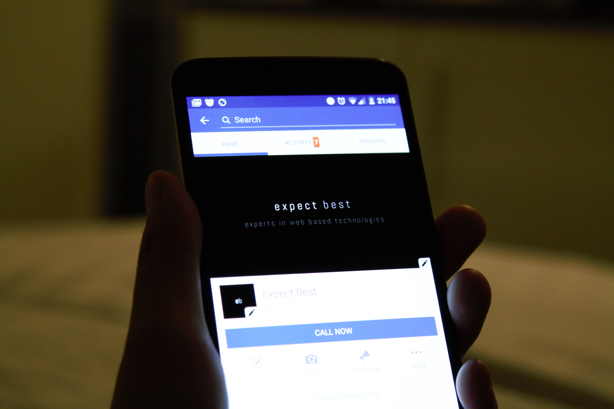
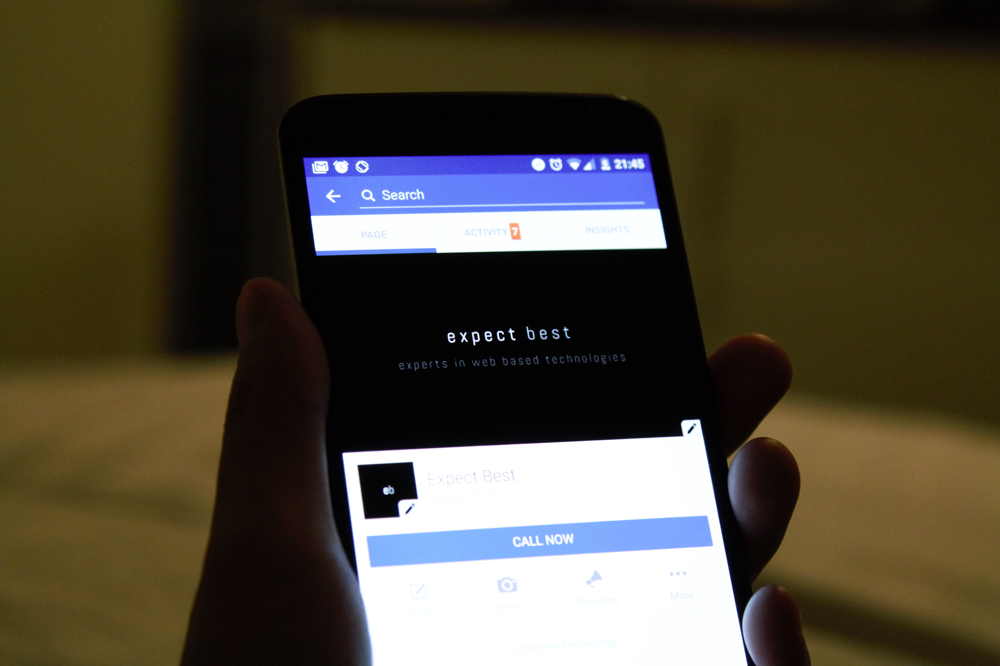

Information System
Sistem Informasi
Department of Information Systems focuses on the in-depth study of how to manage information as a resource, bridging the gap between users and technology to support organizational and business goals through the development and implementation of information systems. Our students will be equipped not only with computing skills and knowledge, but also with management, business and accounting, web and interface design, and organizational communication courses to prepare them to meet the demands of the constantly evolving ICT (Information and Communication and Technology). market.
Degree
Regular Program: Sarjana Komputer (S.Kom.)
Concentrations
Business Information Systems
In this modern area, Business Information Systems have been an integral part of every company. This area of concentration focuses on preparing the students to handle information and shape the system that can deliver information required by a company. Business world nowadays have reached a state where reliance upon information is a critical factor if a business wants to thrive and grow amidst the competition. During their study, the students will acquire skills in ICT, business analysis and problem solving. These includes knowledge in management information systems, business process analysis & improvement, project management, business intelligence, enterprise systems, strategic planning and data technology.


Web and Mobile Development
No longer just a hype or trend, the importance of web and mobile platforms has reached a point where it is crucial for any IT student to be able to effectively utilize this highly dynamic technology in a business environment. This concentration will not only provide the basic knowledge of web and mobile application development skills, but also focus on the integrating the web and mobile applications in the business process. Furthermore, the students will learn integrated knowledge of project management, web engineering, database management, data analysis and decision support system that are crucial for a successful implementation of a web or mobile application in various parts of a business.
 

Information Systems Courses:
Accounting Business
Algorithm & Programming
Business Intelligence
Decision Support System
Enterprise Architecture
Enterprise Resource Planning
E-Business Analysis & Design
Human Computer Interaction
Information System Project Management
Information System Strategic Planning
Life Skills
Management Information Systems
Management & Organizational Behaviour
Multimedia & The Web
Object-Oriented System Development
Web Engineering
Career Opportunities
An Information Systems graduate will be ready and able to start a career as a project manager, systems analyst, web or mobile developer, IT consultant, IT auditor, business analyst, multimedia designer and user interface designer among the many ICT functions in every area including commercial companies both national or multinational, manufacturing, research and education, government or non-profit organizations, and many more.